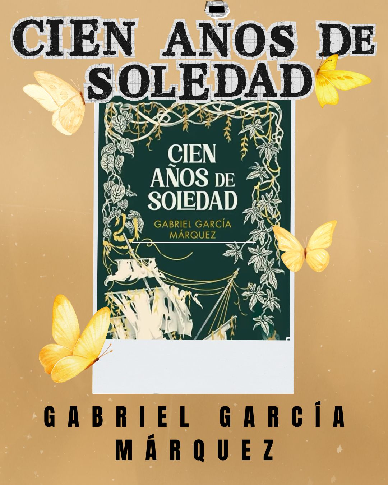
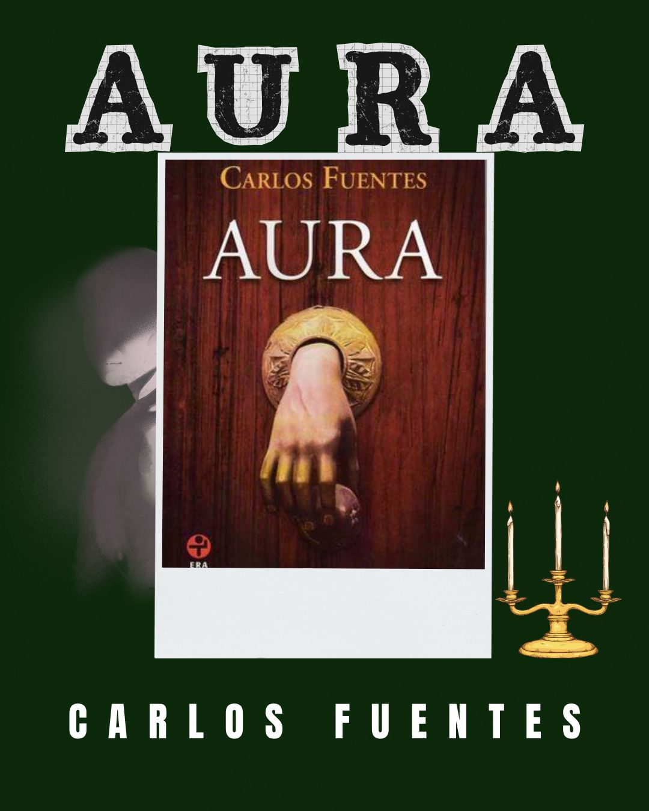
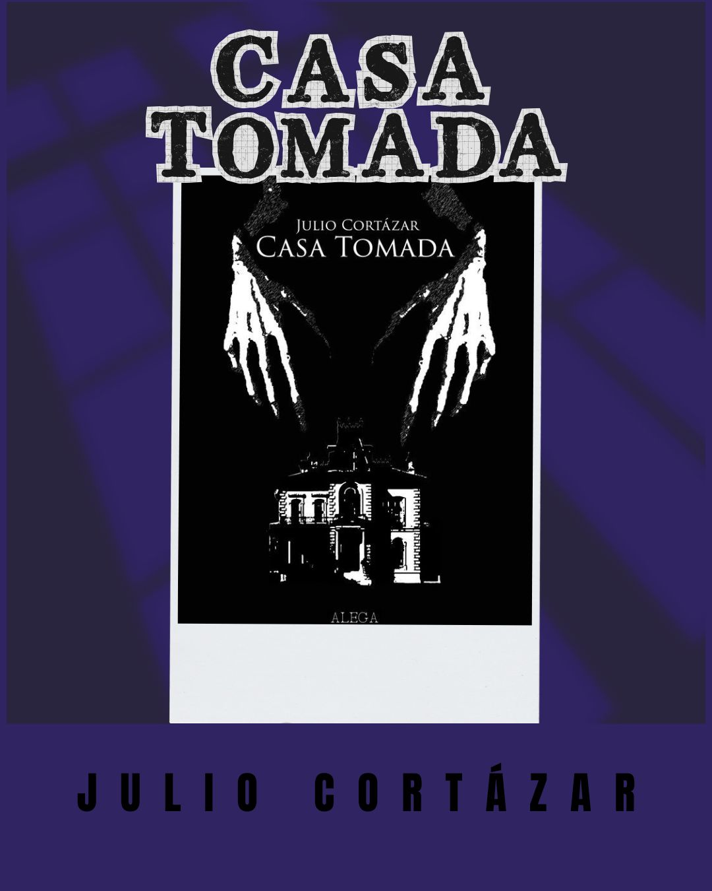

Tres obras para adentrarse en el mundo del realismo mágico,te dejamos una selección para que entres de a poco.
El realismo mágico es un género literario que se ha vuelto una insignia de Latinoamérica. Siendo un género muy particular y único donde la realidad se mezcla con la magia pero está totalmente normalizado. Si nunca te adentraste a este mundo o si te gusta y no sabes que más leer, te dejamos 3 libros para tu biblioteca.

Para todos aquellos que desean adentrarse en el mundo del realismo mágico, este es el libro estrella. Es un clásico que absolutamente todos conocemos aunque sea por nombre. Su contexto de pueblo mítico y la familia retrata perfectamente el aura latinoamericana mezclándose con lo surreal de forma cotidiana.

Aura es la entrada del banquete literario de realismo mágico, es breve, sencilla y completamente misteriosa. Su imagen es fantasmal, lúgubre y gótica siendo un contraste radical con la visual de “Cien años de soledad”. Su suspenso logra generar un sentimiento que compenetra al espectador con el ambiente de la lectura, la narrativa omnisciente hace al lector un personaje adherido.

Este relato a diferencia de los otros no es considerado canónicamente realismo mágico, pero es un tema discutible. Desde Moka si la consideramos como un bocadillo del género y por eso te la recomendamos para adentrarte de a poco a este mundo. Al igual que “Aura” te hace sentir dentro del relato, la sensación de querer saber que pasa te inunda constantemente y el final te genera un sentimiento de libertad.
En Moka creemos que es importante homenajear y recordar nuestras raíces, por eso, brindamos este espacio a un género literario tan distintivo como lo es el realismo mágico e invitamos a todo nuestro público a leer un poco de nuestro distintivo.